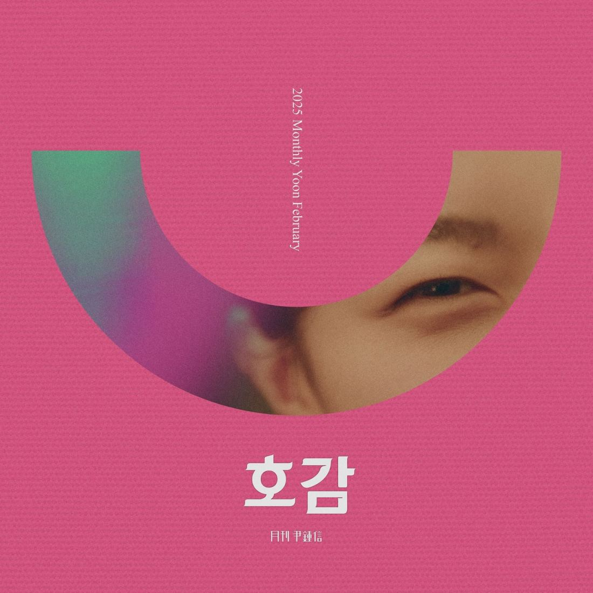

? 윤종신의 월간 프로젝트, '호감'이 전하는 사랑의 복잡함
안녕하세요 라보엠입니다.
윤종신의 월간 윤종신 2월호 '호감'은 2025년 2월 28일 공개된 신곡으로, 짝사랑의 설렘과 고민을 섬세하게 담은 곡입니다. 윤종신은 매월 새로운 주제로 독특한 감성을 선보이는 월간 프로젝트를 이어가고 있는데요, 이번 곡은 특히 "호감"이라는 단어를 통해 사랑의 미묘한 감정을 조명했습니다.
2월호 '호감'
월간 윤종신 편집팀입니다
yoonjongshin.com
? 윤종신 호감: "고백을 망설이는 내 마음"
윤종신의 월간 윤종신 2월호 '호감' 뮤직비디오는 짝사랑의 복잡한 심리를 시각적으로 풀어냅니다. 주인공은 일상 속에서 상대방을 바라보며 설렘과 조심스러움을 교차시키는 모습을 연출합니다. 예를 들어, 거리에서 마주친 순간의 눈맞춤 장면과 멀리서 바라보는 뒷모습이 대비되며, 고백을 망설이는 내적 갈등을 강조합니다
"호감"은 "좋은 감정"을 뜻하지만, 이 곡에서는 "호감을 느끼지만 고백하지 못하는 상황"을 강조합니다. 가사 속 주인공은 상대방에게 매일 조금씩 다가가지만, 결국 마음을 전하지 못하는 내적 갈등을 표현합니다.
? 음악적 특징: 윤종신의 감성적 보컬과 편곡
윤종신은 작사·작곡을 직접 맡았고, 이근호가 공동 작곡으로 참여했습니다.
- 편곡: 잔잔한 피아노 멜로디와 따뜻한 어쿠스틱 사운드가 "고요한 밤" 같은 분위기를 연출합니다.
- 보컬: 윤종신의 부드러운 톤은 가사의 감정을 더욱 부각시키며, 특히 "호~감"이라는 후렴구의 장단점 변화가 인상적입니다.
? 월간 윤종신 호감 가사
오늘 왜 기분이 좋은 걸까
그건 바로 널 마주친 하루였으니까
왜 그럴까 널 보면 어느새 미소가
너는 내게 그런 사람인가 봐
말 걸어보면 금방 느껴져
넌 참 좋은 사람 기분 좋아지는 사람
살다 그런 사람 만나는 게 쉽지 않은 걸
이제 알아 수 많았던 만남들
예전 같음 서두를 거야 더 가까우려 더 알고 싶어 다가가고
하지만 난 좋아 지금도 니가 딱 좋아
니가 내 편이란 게 좋아
이런 사랑도 좋아 곧 식을 설렘보다 느낌 좋은 너
어쩌면 그렇게 어쩌면 내 맘이
한없이 너만 보면 스르르 녹아
가끔만 봐도 좋아 오래 볼 수 있다면 그게 더 좋아
어쩌면 내 맘이 어쩌면 조급해
선을 좀 넘는 듯하면 그냥 모른 척 피식해 괜찮아
예전 같음 고백할 거야 내 맘 알아줘 나만 바라봐 애가 타고
하지만 딱 좋아 솔직히 좀 설레지만
지금의 친절함이 좋아
이런 사랑도 좋아 곧 식을 설렘보다 느낌 좋은 너
어쩌면 그렇게 어쩌면 내 맘이
한없이 너만 보면 스르르 녹아
가끔만 봐도 좋아 오래 볼 수 있다면 그게 더 좋아
어느 날 늦은 밤 느닷없는 연락
한 번쯤 술 취해 혀가 좀 꼬이면
어쩌다 내 맘을 꺼내 보인다면
선을 좀 넘은 거니까 그날은 미친 거니까 잊어줘
윤종신은 가사에서 상대방과의 관계를 은유적으로 표현했습니다.
- "하늘은 맑고 바람은 잔잔해": 평온한 분위기 속에서도 마음은 복잡함을 암시합니다.
- "고백의 순간을 유예하는 나날들": 고백을 망설이는 시간의 무게를 강조합니다.
특히 반복되는 후렴구는 "호감"이라는 키워드를 통해 사랑의 불확실성을 강조하며, 독특한 리듬감을 더합니다.
"너에게 가까이 가고 싶지만,
멀리 있어야 할 것 같아"
이런 대비되는 심리를 담은 가사는 "사랑의 미묘함"을 생생하게 전달합니다.
? '호감'이 주는 메시지: 사랑의 미학적 순간
이 곡은 "사랑은 말보다 행동으로 표현되지만, 때로는 말하지 못하는 순간도 아름답다"는 메시지를 담고 있습니다. "호감"이라는 단어 자체가 "좋은 감정"을 의미하지만, "고백하지 못한 사랑"이라는 모순을 내포합니다. "너를 바라보는 내 눈빛이,네게 닿을까 봐 두려워"라는 가사는 "사랑의 순수함"을 강조합니다.
? 맺음말: 사랑의 미묘함을 담은 윤종신의 선물
'호감'은 "사랑은 말보다 행동으로 표현되지만, 때로는 말하지 못하는 순간도 아름답다"는 메시지를 전달하고 있습니다. 윤종신의 월간 프로젝트는 매번 새로운 주제로 독자적인 음악 세계를 선보이며, 이번 곡 역시 "사랑의 미학"을 담은 작품으로 기억될거에요.
